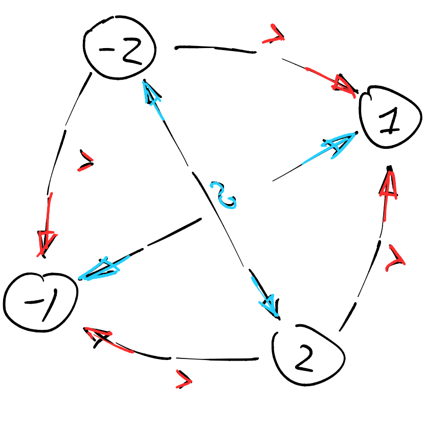

Первое домашнее задание
Contents
Первое домашнее задание¶
Домашняя работа сдается строго в формате markdown (.md).
Первый блок задач (10 баллов = 2%)¶
Задача 1.1 (1 балла)¶
Рассмотрим нео-классическую модель с предпочтениями \(\succcurlyeq\) на множестве альтернатив \(X = \{-2, -1, 1, 2\}\), заданные графом
{kind=link}
Заполните матрицу бинарного отношения а также подберите глобальную функцию (композиция элементарных), которая ее представляет:
Задача 1.2 (2 балла)¶
В Лабораторию Экспериментальной Экономики пришел человек с нео-классическими предпочтениями \(\succcurlyeq\) на множестве альтернатив \(X = \{x, y, z, w\}\). Вам требуется полностью откалибровать его предпочтения.
Работавший до вас ассистент начал заполнять матрицу бинарных отношений, но оставил много пропусков. Вы должны заполнить ее до конца.
Вам разрешено задавать человеку только вопросы типа “верно ли, что вы слабо предпочитаете альтернативу А альтернативе Б”.
Вопрос: Какое минимальное число вопросов нужно задать, чтобы полностью откалибровать (заполнить матрицу) предпочтения? Аргументируйте.
Задача 1.3 (2 балла)¶
Рассмотрим экзотическую модель с предпочтениями \(\succcurlyeq\) на \(X\), которые заданы следующим образом. Для двух рациональных предпочтений \(\succcurlyeq_1\) и \(\succcurlyeq_2\) на том же множестве альтернатив, определим
То есть, в нашей экзотической модели, \(x\) предпочитается \(y\) тогда и только тогда, когда либо \(\succcurlyeq_1\) предпочитает \(x\), либо \(\succcurlyeq_1\) безразличен но тогда \(\succcurlyeq_2\) предпочитает \(x\). Докажите, что \(\succcurlyeq\) рациональное предпочтение, или приведите контрпример.
Задача 1.4 (5 балла)¶
Рассмотрим новую модель поведения потребителя, отличную от предпочтений и полезностей. Модель состоит из пространства альтернатив \(X\) и отображения \(C\) которое ставит любому подмножеству \(Y \subset X\) уже его подмножество \(Z \subset Y \subset X\), обязательно непустое. Будем называть \(Y\) - меню a \(Z\) - выбор.
То есть, мы предлагаем агенту меню с товарами, а он вычеркивает из него часть (или, возможно, ничего не вычеркивает, но главное чтобы он не вычеркнул вообще все) и возвращает меню со словами “это мой выбор”.
Слабая Аксиома Выбора (WARP) говорит, что для двух портфелей \(x, y \in X\) невозможно, чтобы в одном меню \(Y'\): \(x\) был выбран в присутствие \(y\), а в другом меню \(Y''\): \(y\) был выбран в присутствие \(x\), но \(x\) выбран не был. Подразумевается, что \(x, y \in Y'\) и \(x, y \in Y''\).
Придумайте как вывести модель выбора из модели рациональных предпочтений. Докажите, что для рациональных предпочтений, ассоциированный с ними выбор всегда удовлетворяет WARP.
Обобщенная Аксиома Выбора (GARP) говорит, что для последовательности портфелей \(x_1, x_2, \ldots x_n \in X\) невозможно, чтобы в одном меню: \(x_1\) был выбран в присутствие \(x_2\), в другом меню \(x_2\) был выбран в присутствие \(x_3\), и так далее… до \(x_n\). А в еще одном меню \(x_n\) был выбран в присутствие \(x_1\), но \(x_1\) выбран не был.
Придумайте как вывести модель предпочтений из модели выбора (можно пользоваться дефолтными аксиомами, например, что выбор непуст). Докажите, что в модели выбора, удовлетворяющей GARP, ассоциированные предпочтения обязательно рациональны.
Второй блок задач (10 баллов = 2%)¶
Задача 2.1 (1 балл)¶
Дозаполните определения выпуклого множества, полезности и предпочтения, постарайтесь не запутаться:
множество \(X\) выпукло если для любых \(x,y \in X\):
полезность \(U\) выпуклa если для любых \(x,y \in X\):
предпочтения \(\succcurlyeq\) выпуклы если для любых \(z \in X\) и \(x, y \in L_{+}(x)\):
Задача 2.2 (1 балл)¶
Докажите, что объединение двух выпуклых множеств выпукло, либо приведите контрпример.
Задача 2.3 (2 баллa)¶
Промаксимизируйте функцию \(-(x-1)^2\) на отрезке \([-b,b]\). Запишите ответ как функцию от \(b>0\).
Задача 2.4 (2 балл)¶
Используя сначала метод линий уровня, а затем метод Лагранжа (если сможете), решите следующую оптимизацинную задачу:
Является ли эта задача выпуклой?
Задача 2.5 (4 балла)¶
Рассмотрим полезность вида \(U(x, y) = x^{\alpha} y^{\beta}\) в пространстве альтернатив \(\mathbb{R}^2_{+}\), то есть, \(x, y>0\).
Используя Гессиан, найдите все \(\alpha, \beta >0\) такие что полезность вогнутая.
Используя Окаймленный Гессиан, найдите все \(\alpha, \beta>0\) при которых полезность квази-вогнутая.
Наконец, найдите все \(\alpha, \beta>0\) при которых полезность является монотонным преобразованием некоторой вогнутой функции.
Пользуйтесь строгими версиями вогнутости или критерия, по вкусу.